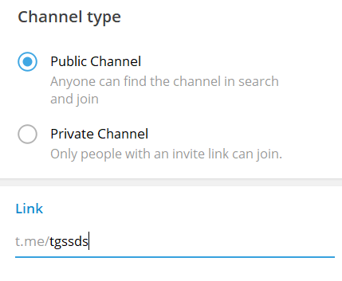
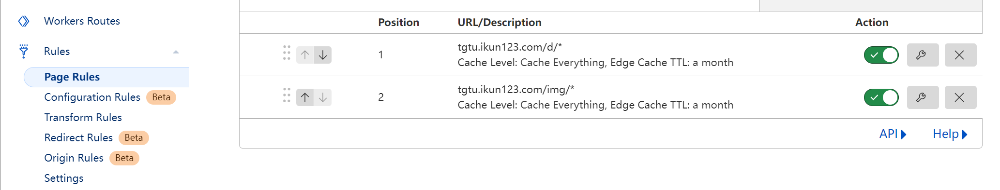
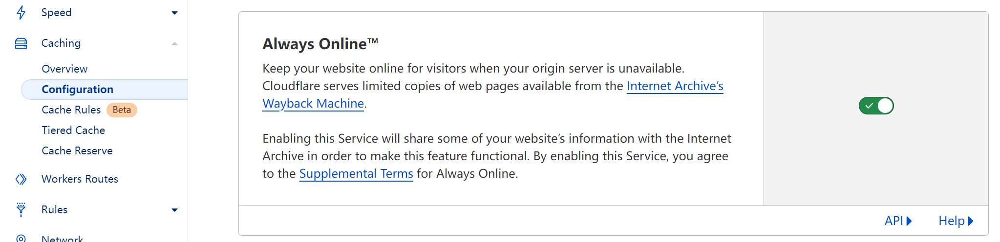
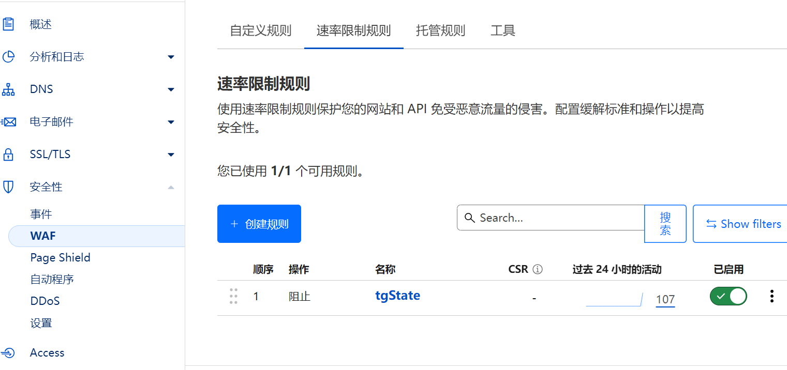
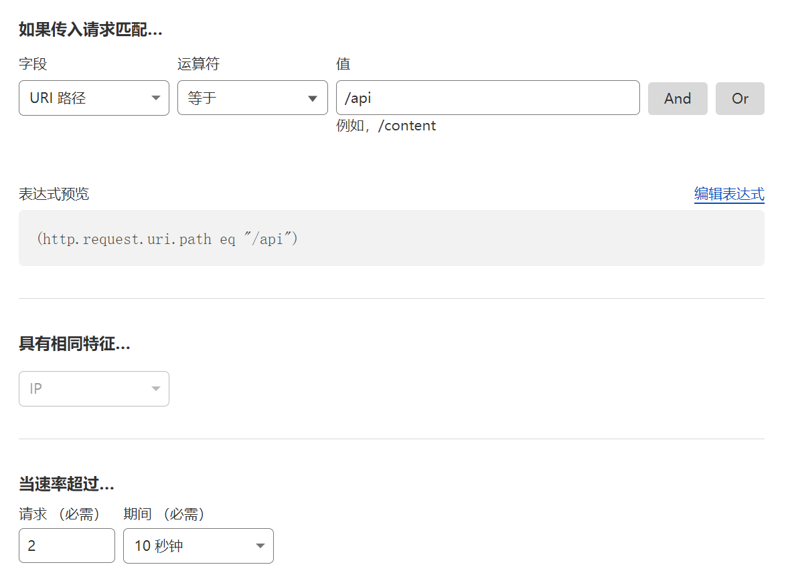

tgState
使用Telegram机器人和频道作为媒介存储的图床
最大上传支持20MB，建议配合CloudFlare的缓存+always online使用
开源地址
使用教程
搭建
以Docker方式运行为例，首先pull镜像
docker pull csznet/tgstate:latest
创建机器人（使用@BotFather创建）并获取bot token，例如为123:abc
创建频道，拉入机器人设为管理员，公开频道并自定义Link地址，例如https://t.me/tgssds

启动Docker镜像
docker run -d -p 8088:8088 --name tgstate -e TOKEN=123:abc -e CHANNEL=@tgssds csznet/tgstate:latest
其中的TOKEN和CHANNEL要设置为你的bot token和频道Link后缀
可以看到，TOKEN和CHANNEL的设置分别是TOKEN=123:abc和CHANNEL=@tgssds
其它
建议套上Cloudflare并设置页面规则给/img/*和/d/*完全缓存

开启Always Online

使用CloudFlare WAF控制请求速率

建议设置10秒内不能超过2次
